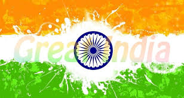
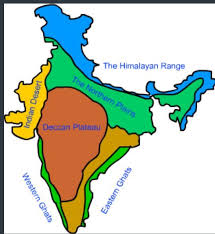
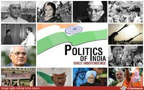
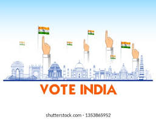
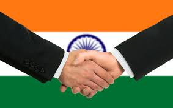

The term Greater India as a reference to the Indian cultural sphere was popularised by a network of Bengali scholars in the 1920s. It is an umbrella term encompassing the Indian subcontinent, and surrounding countries which are culturally linked through a diverse cultural cline.


India Flag
India Map
India Before & After
When British rule came to an end in 1947, the subcontinent was partitioned along religious lines into two separate countries—India, with a majority of Hindus, and Pakistan, with a majority of Muslims. ... The Constitution adopted in 1950 made India a democratic country, and this democracy has been sustained since then.
India Before
India After
Freedom Fighters
The Indian independence movement consisted of efforts by individuals and organizations from a wide spectrum of society to obtain political independence from the British, French and Portuguese rule through the use of a many methods. This is a list of individuals who notably campaigned against or are considered to have campaigned against colonial rule on the Indian sub-continent.
Post-independence, the term "freedom fighter" was officially recognized by the Indian government for those who took part in the movement; people in this category (which can also include dependent family members) receive pensions and other benefits such as Special Railway Counters.
Indian freedom fighters
Indian Political leaders
Politics of India works within the framework of the country's Constitution. India is a parliamentary democratic republic in which the president of India is the head of state and the prime minister of India is the head of government. It is based on the federal structure of government, although the word is not used in the Constitution itself. India follows the dual polity system, i.e. federal in nature, that consists of the central authority at the centre and states at the periphery. The Constitution defines the organisational powers and limitations of both central and state governments; it is well recognised, fluid (Preamble of the Constitution being rigid and to dictate further amendments to the Constitution) and considered supreme, i.e. the laws of the nation must conform to it.


Indian Political Leaders
We elect political leaders by voting system
Central government structure
Business Leaders
The few important Indian Businesses are in the sectors of Automobiles, Auto Components, Aviation, Banking, Biotechnology, Cement, Financial Services, Food Industry, Gems and Jewelry, Healthcare, Information Technology, Insurance, IT enabled, Services, Media & Entertainment, Oil & Gas, Real Estate, Retail, Steel, ...

Indian Business
Mukesh & Ratan Tata
Business Tycoons
Indian Sports
India has a great tradition of sports, and is greatly influenced by the British presence in India in the 18th and 19th century. Cricket is undoubtedly the most popular sport, but in such a large and populous country there are many other sports that are played by a lot of people.
Popular Indian Sports
Indian Sports persons
Beautiful Indian Girls
The Beauty of Indian girls lies in their smile, eyes especially in their character. In India girls are mold with Indian traditions, customs and culture